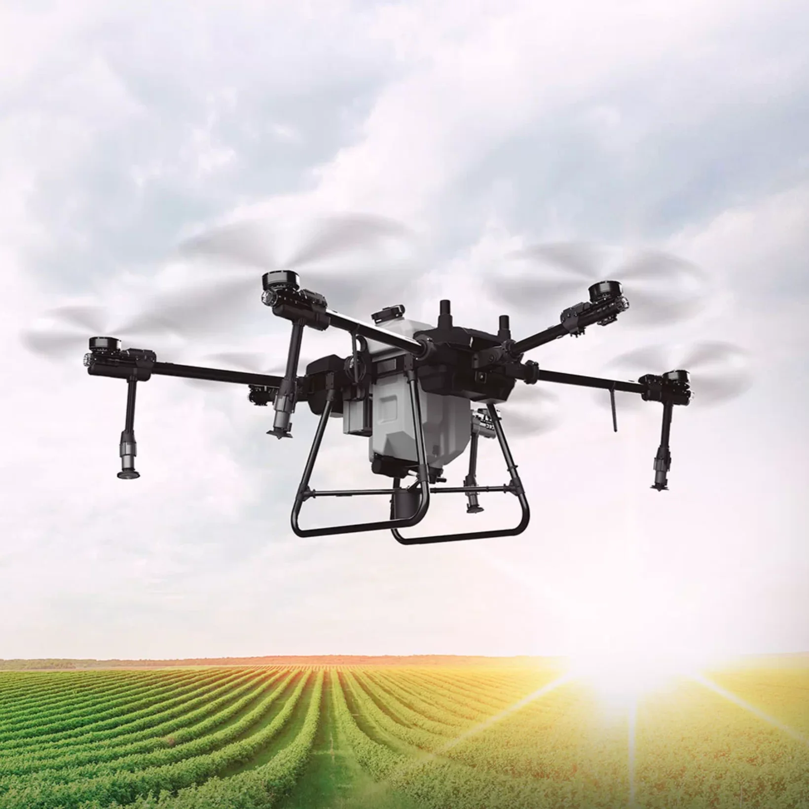

DRONE PULVERIZADOR S50
R$ 124.000,00
ou R$ 117.800,00 via Pix
O Drone Pulverizador S50 é um drone especialmente projetado para a aplicação de produtos químicos, como pesticidas ou fertilizantes, em plantações ou outras áreas agrícolas. O Drone Pulverizador S50 é equipado com tanques de líquidos ou dispersor de sólidos e bicos centrífugo automatizado, que permitem a dispersão controlada do produto químico sobre a área alvo.